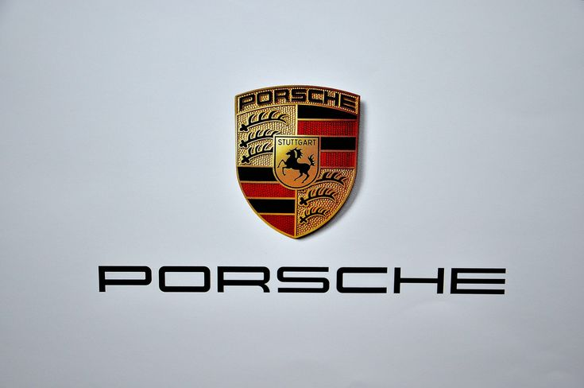

Porsche Evolution
Porsche
Few cars are as truly legendary as the Porsche 911. Instantly recognized the world over, it is a car that has
stood the test of time, whilst remaining highly desirable and as capable as almost anything on the road.
Designed by Ferdinand ‘Butzi’ Porsche, the original 911 produced 130bhp from its flat-six ‘boxer’ engine. The C
series 911 was introduced with a number of improvements, namely its longer wheelbase, which was supposed to
counteract the car’s unstable handling. Its 2.2-litre flat-six also produced more power, at 180bhp. A racing car
for the road, the RS 2.7 was a lightweight, stripped-out, 210bhp beast. Today, they are a collector’s dream
and are considered by many to be the greatest 911 ever.
Porsche completely revised the 911 for 1989. It’s styling was a natural development from earlier models, yet its
chassis, engine and drivetrain were brand new. It now pumped out 246bhp and reached 0-60mph in 5.7 seconds.The
final air-cooled 911, the ‘993’ was dramatically more powerful and featured a re-designed front and rear end,
boosting aerodynamic efficiency. A Turbo (pictured) incarnation was introduced in 1995, featuring 4-wheel drive
and over 400bhp.It’s fair to say the ‘996’ didn’t go down particularly well upon release; its strange ‘teardrop’
headlights and soft
styling didn’t help. Its new water-cooled engine proved extremely reliable though, and its many variants
including the
GT3, GT2 and Turbo were still about as quick as anything on the road.
Copyright © 2024